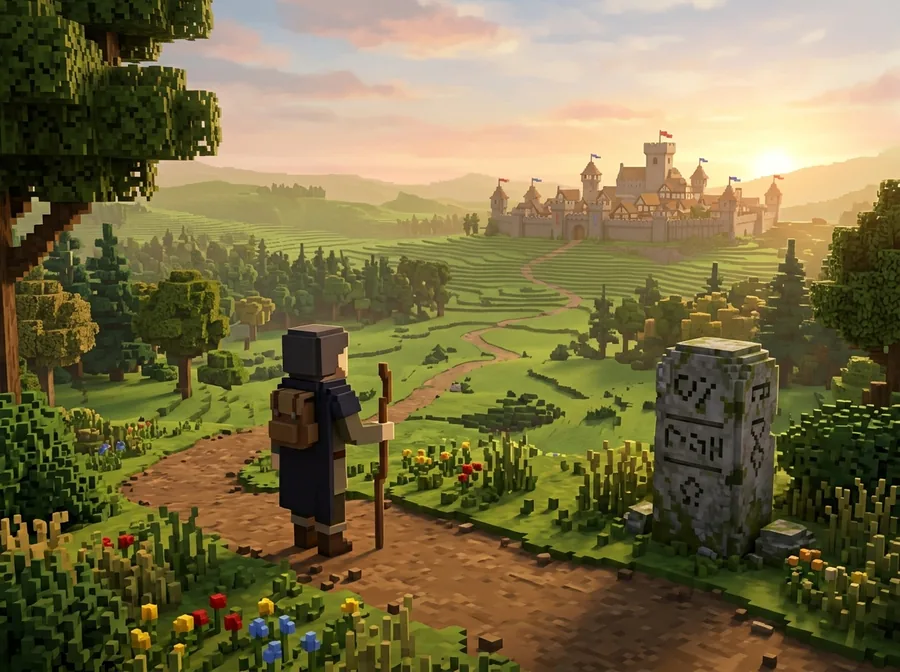
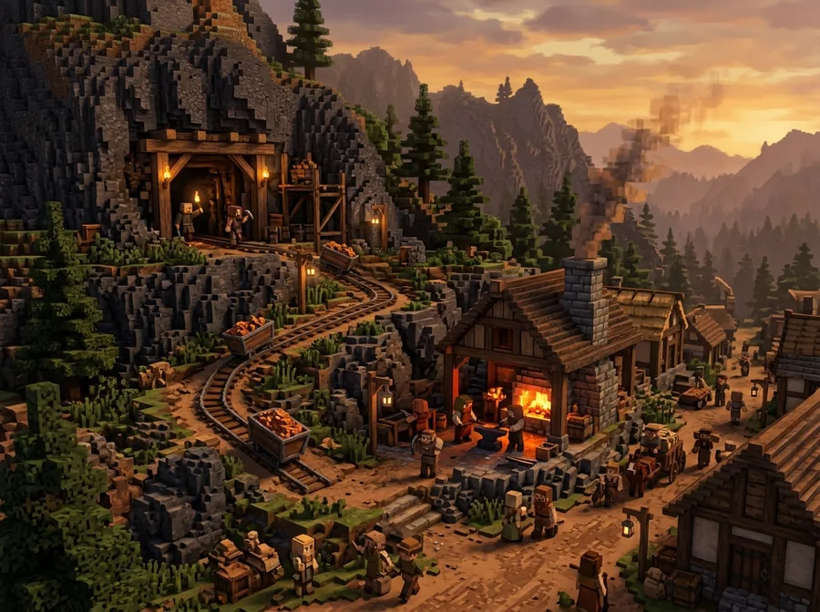
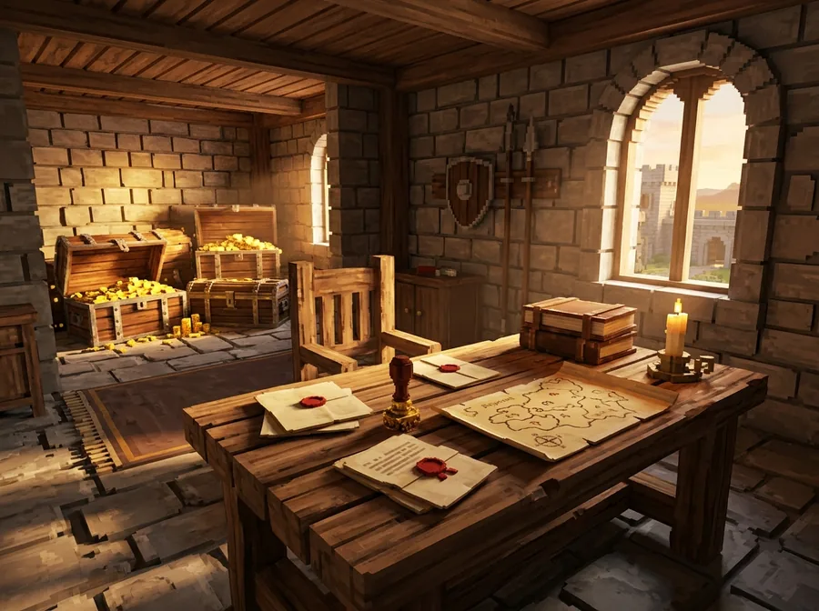
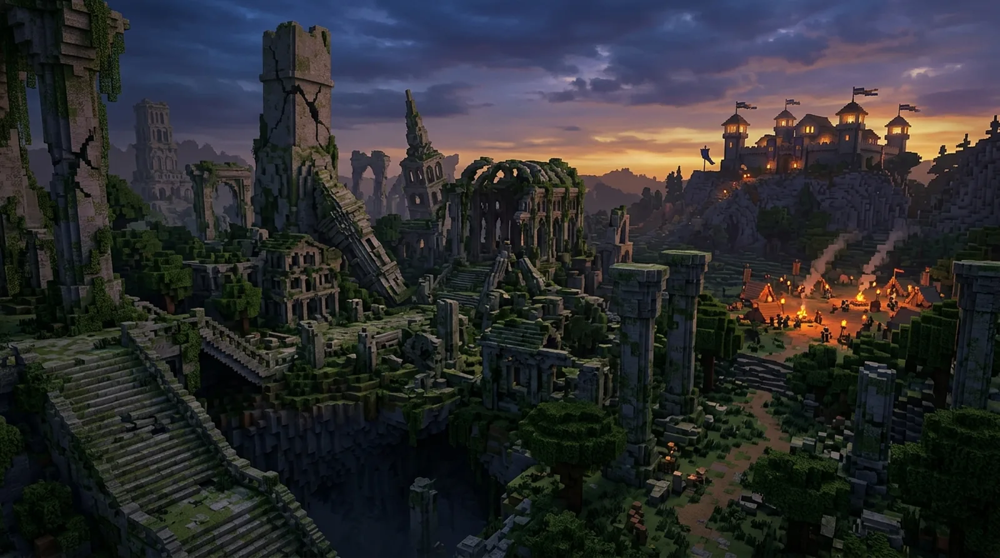

Day one
Nobody knows you
You start beside a road, a day or two from the nearest town. A board in the square asks for help with wolves at a farm. You deal with them, bring back a note signed by the farmer, and the guild clerk pays you in coin. Next time you pass the gate, the guard nods to you.

A generation
The iron mine
The town’s smith pays too much for iron, so you help open a mine in the hills. Steady ore lets him take on an apprentice. Years on, the old smith is buried behind the chapel, the apprentice runs the forge, and his daughter keeps the mine’s books. The town has doubled, and the country across the river has started asking who owns those hills.

If you rule
A morning at the treasury
Your treasurer has left proposals on the desk. You press your seal on “repair the north wall” and tear up “raise the grain tax”, and by afternoon there is scaffolding on the wall. A messenger says forts are going up across the river, so you set banners on the map table and the marshal moves troops to the ford. Tomorrow you ride out to look for yourself, because the marshal’s picture of that border is a week old.

Before you arrived
The fallen capital
The world ran for centuries before you spawned. Kingdoms rose and fell, and their ruins stand where it happened. An old man at the inn says the two crowns have hated each other since a war two hundred years ago, and the library has the chronicle that says why. Under the ruined capital, down the old stairs, lies the way to the End.